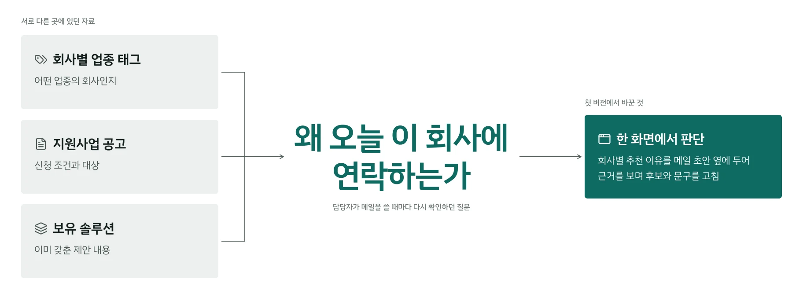
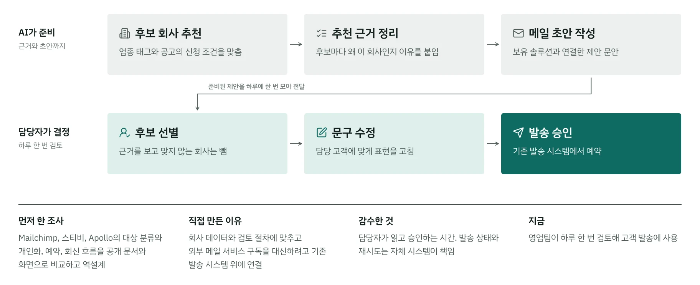
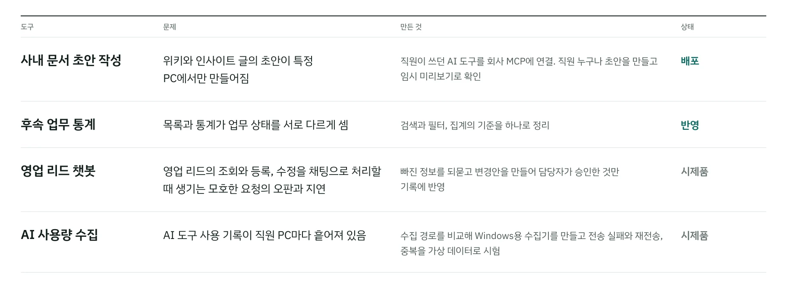
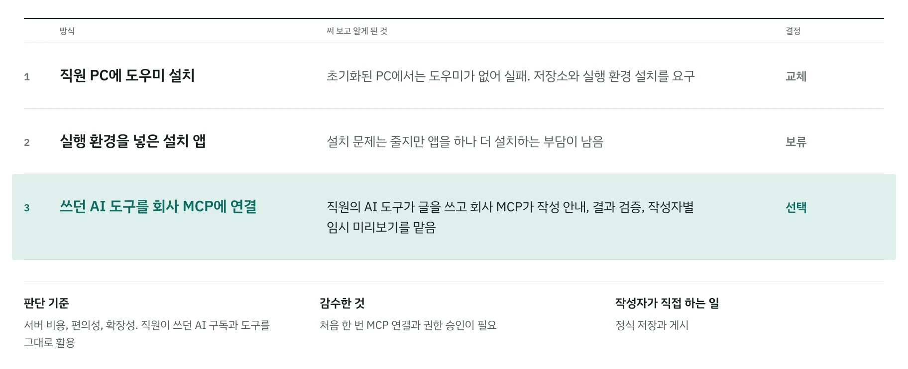
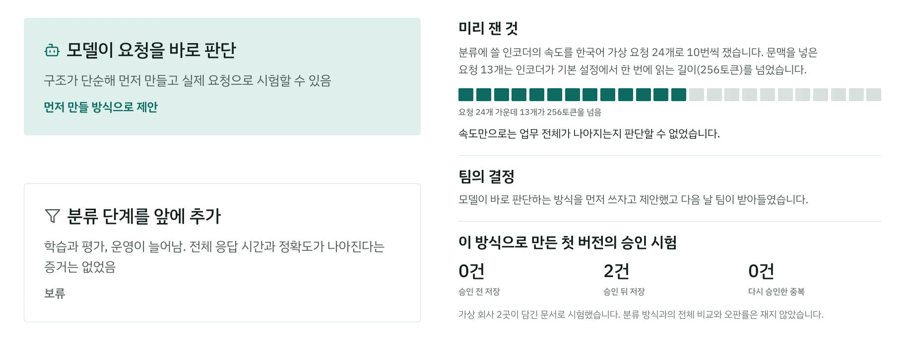

Projects
직원 인터뷰에서 시작한 사내 AI 업무 자동화
직원들이 매일 어디에 시간을 쓰는지 먼저 물었습니다. 반복되는 준비는 AI가 하고 판단은 담당자가 하는 도구를 만들어 실제 업무에 쓰이게 했습니다.
영업 담당자에게 인터뷰를 요청해 제안 메일 한 통을 준비하는 과정을 처음부터 따라갔습니다. 후보 목록이 있어도 연락할 근거는 회사마다 공고와 보유 솔루션에서 새로 확인해야 했습니다.

누구에게 메일을 보낼지는 영업팀이 가장 잘 압니다. AI에는 근거를 찾고 초안을 쓰는 일까지만 맡기고 발송은 담당자가 승인하게 했습니다.

영업 메일과 사내 문서 초안은 제가 먼저 제안해 시작한 일입니다.

사내 문서 초안을 만드는 세 가지 방식을 차례로 써 봤습니다. 초기화된 PC에서 설치가 실패한 일이 계기였고 추가 앱을 없애 달라는 요구를 기준으로 골랐습니다.

영업 리드의 조회와 등록, 수정 요청을 채팅으로 처리하는 챗봇입니다. 요청을 먼저 분류하는 단계를 더하면 실제로 나아지는지 판단할 근거가 필요했습니다.
